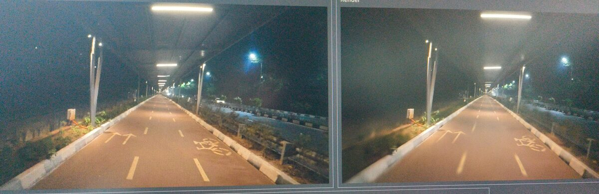

Night Ride
A Hyderabad cycle track, ridden at night and turned into a 3D Gaussian splat
One late ride down the covered cycle track, a camera held up in one hand, and a question: can a night-time video become a place you can fly through? This is how the footage became a splat, and how it ended up in Unreal Engine.

Loads the live splat from SuperSplat (about 14 MB). Drag to look around, scroll to move. Open full screen ↗
- Type
- Personal R&D
- Capture
- Handheld video, on a bike
- Pipeline
- Frames → camera tracking → 3DGS
- Viewer
- Live in the browser
01 · CaptureRiding with the camera up
The whole capture is a single slow ride down the track at night. I kept the camera steady and pointed forward and rode as smoothly as I could. Night footage is the hard mode for splats: noise, motion blur and very little sideways movement for the solver to work with.
02 · TrackingFinding where every frame was taken
The video is split into frames and matched feature by feature, so each frame gets its exact camera position. All 114 cameras landed in a clean line down the track, with a sparse point cloud of about 9.8k points and 0.55 px mean reprojection error. That point cloud is the seed the splat grows from.
 Photo vs. splat render, with the error map below
Photo vs. splat render, with the error map below03 · TrainingTeaching a million splats to look like the street
Training renders the scene from each camera, compares it with the real photo and nudges about a million Gaussians until they match. The error map shows what's left: almost all the mistakes sit on fine edges such as lane paint, railings and plants. The light, the road and the solar roof are already there.
04 · Unreal EngineBringing the splat into Unreal
The trained splat is now in Unreal Engine as its own level, with a Cine Camera and a Sequencer shot. The first test is a reveal: the track builds itself out of glowing points before the camera rides down it. The full cinematic is in progress.
05 · Next captureSame pipeline, indoors: my desk
The next splat is a lot closer to home: my desk at work, captured with a slow orbit. Indoors with steady light, the cameras ring the scene from every side, and the result goes straight into Blender as a splat I can light and render around, a small step towards digital twins of real rooms.
What I learnedNotes for the next capture
Walk slower than you ride. Shoot at blue hour, not full night. Do a second pass in the other direction at a different height. The splat stays sharp right along the path the camera travelled and gets dreamy the further you drift from it, which suits a night mood piece anyway.